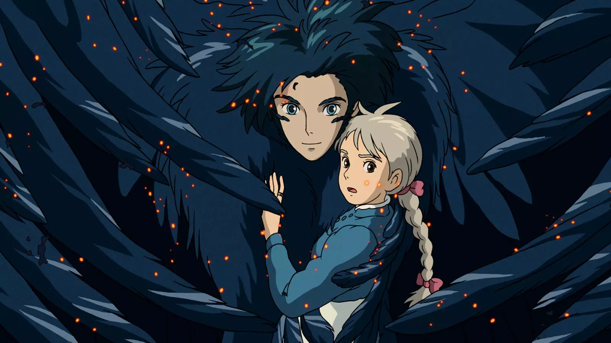
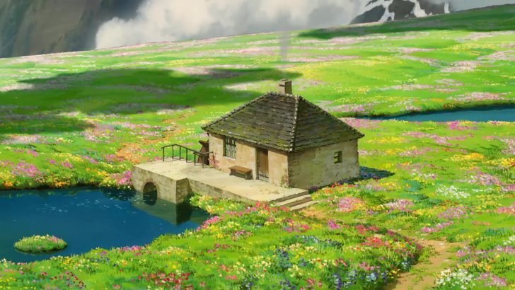
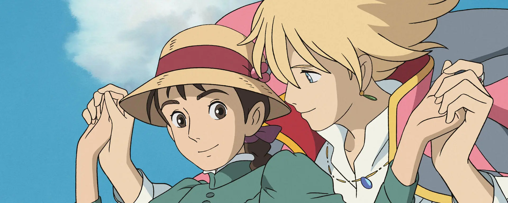
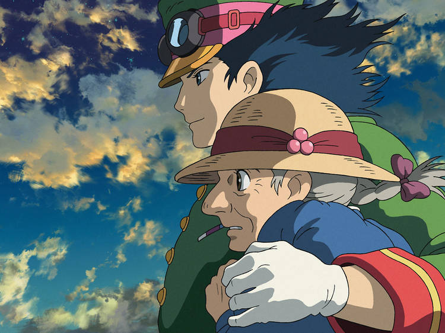
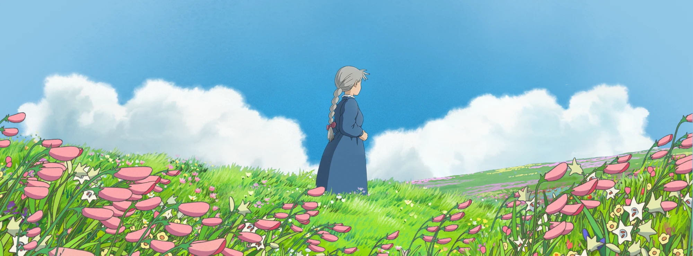

Howl's Moving Castle
Sophie
Sophie starts as a shy, unassuming hat maker, but her life takes a dramatic turn when a witch's spell transforms her into an old woman. Seeking to break the curse, Sophie leaves her home and becomes the housekeeper in the magical, moving castle owned by the mysterious wizard Howl. Throughout her journey, Sophie shows great courage and grows in self-confidence, forming deep connections with Howl and other magical beings. Her adventure is a beautiful blend of self-discovery, love, and bravery.





